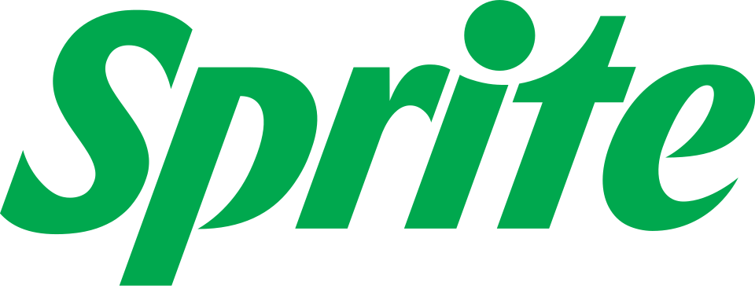

홈 > 브랜드 매거진 > Fibe
Fibe
Fibe는 영국 기반의 기능성 음료 브랜드로, 클래식 탄산음료 맛을 유지하면서 캔당 식이섬유 5g을 담은 '건강에 좋은 탄산음료'를 표방한다. 2024년 브랜드 작업은 스튜디오 Analogue가 맡았다.
산업 분야 식음료 · 공개 등급 편집 검수 · 브랜드 평가 4 ★
Fi
Fibe
한눈에 보는 브랜드
Fibe는 영국 기반의 기능성 음료 브랜드로, 클래식한 탄산음료의 맛을 유지하면서 캔당 식이섬유 5g과 30kcal를 담은 '건강에 좋은 탄산음료'를 표방한다. 칼슘과 비타민 C를 더한 제품으로 소개되며, 디자인 스튜디오 Analogue가 2024년 브랜드 아이덴티티 작업을 맡았다.
브랜드 관점
Fibe 항목은 기업 연혁보다 시각 아이덴티티의 완성도를 읽는 데 적합한 자료입니다. Soft Drinks 분류 안에서 어떤 브랜드가 로고, 타입, 컬러, 아트 디렉션, 애플리케이션을 하나의 시스템으로 묶는지 보여주며, 산업 정보와 별도로 BI/CI 디자인 레퍼런스 축을 형성합니다.
일부 상세 아이덴티티는 멤버십 잠금 상태로 기록되어 공개 메타데이터 중심으로만 정리됩니다.
브랜드 아이덴티티
Analogue는 Fibe를 위해 활기차고 'newstalgic(향수와 새로움을 결합한)' 브랜드 세계를 구축했으며, 작업 범위는 브랜드 아이덴티티·가이드라인·패키지·캔 렌더링·모션 그래픽·광고에 걸친다. 핵심 전략은 식이섬유 섭취를 무겁지 않고 즐겁게 만드는 것으로, 영양 관련 전문 용어를 배제하고 '부담 없이 더 이로운 탄산음료'로 포지셔닝했다.
로고의 구체적 형태와 서체·색상 팔레트 등 세부 시각 사양은 공개 자료로 확인되지 않는다.
제품과 서비스
Fibe 항목의 제품·서비스 정보는 일반 상품 카탈로그가 아니라 브랜드 아이덴티티 산출물 기준으로 정리됩니다. 전체 에셋 21개, 이미지 16개, 영상 5개, 로컬 저장 이미지 16개를 통해 정지 이미지와 영상 에셋의 비중을 확인할 수 있고, 이는 로고 적용, 컬러 시스템, 캠페인 톤, 패키지 또는 공간 적용 가능성을 검토하는 출발점이 됩니다.
사람들
타임라인
BI/CI 변천사
확인된 BI/CI 이미지가 아직 없습니다.
함께 읽을 브랜드
J2
J2O
식음료 · 편집 검수J2OJ2O는 2025년에 기록된 Soft Drinks 계열의 브랜드 아이덴티티 사례입니다. Bloom가 아이덴티티 작업의 디자이너로 기록되어 있습니다. 로고, 타입, 컬...
 기술·전자 · 편집 검수Analog
기술·전자 · 편집 검수AnalogAnalog는 2025년에 기록된 AI Brands 계열의 브랜드 아이덴티티 사례입니다. Mucho가 아이덴티티 작업의 디자이너로 기록되어 있습니다. 로고, 타입,...
In
Innocent
식음료 · 편집 검수InnocentInnocent는 2025년에 기록된 Soft Drinks 계열의 브랜드 아이덴티티 사례입니다. Derek&Eric가 아이덴티티 작업의 디자이너로 기록되어 있습니다....
Ag
Agua de Madre
식음료 · 편집 검수Agua de MadreAgua de Madre는 2024년에 기록된 Soft Drinks 계열의 브랜드 아이덴티티 사례입니다. Chris Chapman가 아이덴티티 작업의 디자이너로 기록...
As
Ashton
식음료 · 편집 검수AshtonAshton는 2024년에 기록된 Fast Food 계열의 브랜드 아이덴티티 사례입니다. lg2가 아이덴티티 작업의 디자이너로 기록되어 있습니다. 로고, 타입, 컬러...
 식음료 · 편집 검수Ribena
식음료 · 편집 검수RibenaRibena는 2025년에 기록된 Beverage 계열의 브랜드 아이덴티티 사례입니다. Elmwood가 아이덴티티 작업의 디자이너로 기록되어 있습니다. 로고, 타입,...

식음료 · 편집 검수SpriteSprite는 2026년에 기록된 Soft Drinks 계열의 브랜드 아이덴티티 사례입니다. For People가 아이덴티티 작업의 디자이너로 기록되어 있습니다. 로...
Wi
Wilda
식음료 · 편집 검수WildaWilda는 2022년에 기록된 Beverage 계열의 브랜드 아이덴티티 사례입니다. Hey가 아이덴티티 작업의 디자이너로 기록되어 있습니다. 로고, 타입, 컬러,...